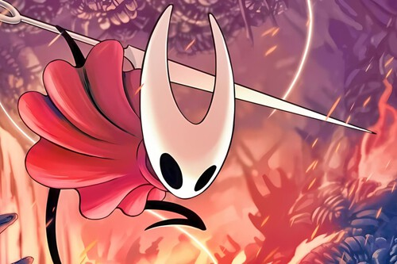

Protagonsita
Hornet es un personaje central del universo Hollow Knight, y la protagonista principal de Hollow Knight: Silksong. Es una guerrera ágil y silenciosa, conocida por su habilidad con la aguja y el hilo, que utiliza como arma para atacar y moverse rápidamente por el mundo. Hornet actúa como guía y rival del Caballero en el juego original, pero en Silksong toma el rol principal, explorando el reino de Pharloom para descubrir sus secretos y enfrentarse a enemigos y jefes desafiantes. Es valiente, independiente y rápida, y su historia está ligada al misterio del reino y a su linaje, ofreciendo al jugador una perspectiva única del mundo de Hollow Knight desde el punto de vista de un personaje fuerte y determinado.
